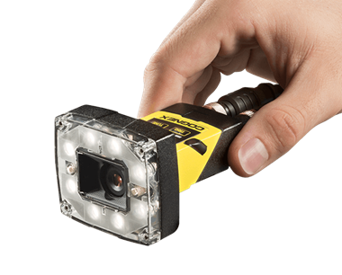

Привет, меня зовут Денис.
Мне 40 лет и я учусь на JavaScript разработчика
Долгое время проработал на заводе, начиная с грузчика и дойдя до директорского кресла. Решил сменить сферу деятельности и стать разработчиком JS
Последние статьи в блоге:
Посмотреть все-
Внедрил систему технического зрения
-
Внедрил систему технического зрения
Избранные работы:
-

Техническое зрение Cognex
Тех.зрение -
Техническое зрение Cognex
Тех.зрение -
Техническое зрение Cognex
Тех.зрение